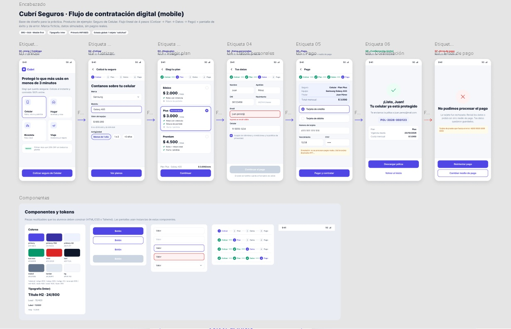
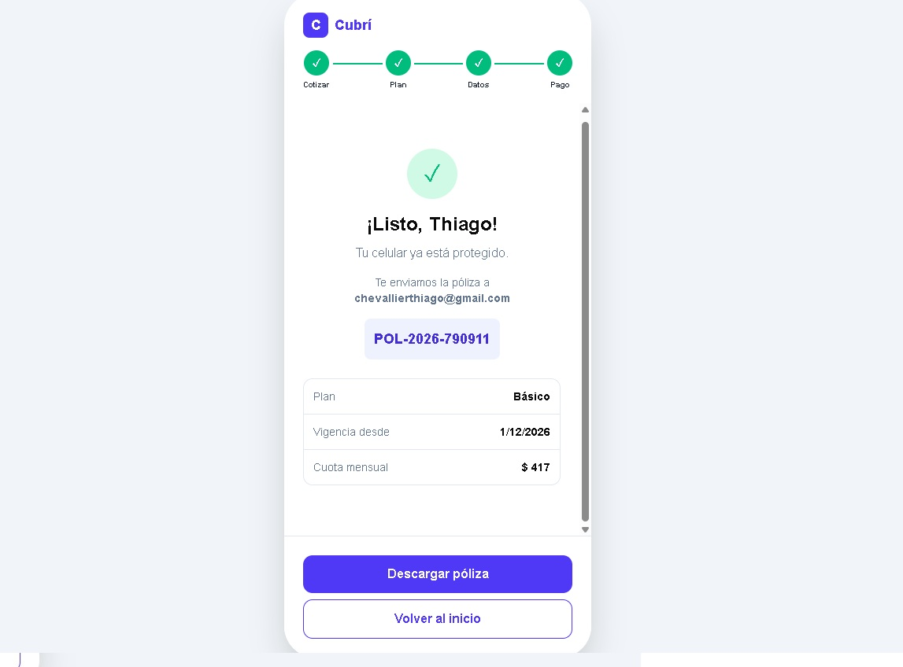

1. El Problema
En el mercado de seguros tradicional, la contratación de una póliza para el celular suele ser un proceso engorroso. Los usuarios deben lidiar con formularios kilométricos, llamadas telefónicas y falta de claridad en los precios y coberturas.
El desafío de este proyecto fue diseñar y desarrollar un flujo de contratación 100% digital que permita al usuario cotizar, comparar planes, ingresar sus datos y pagar (de forma simulada) en menos de 3 minutos, sin fricción y desde su celular.
2. El Proceso
Para abordar el problema, seguí un proceso de diseño UX estructurado:
- Benchmark: Analicé cómo otros bancos y aseguradoras digitales (como Naranja X o Ualá) estructuran sus flujos de venta.
- Arquitectura de Información: Dividí el proceso en 4 pasos lógicos (Cotizar → Planes → Datos → Pago) para no abrumar al usuario.
- Wireframes y Prototipo: Diseñé el flujo en Figma aplicando un sistema de diseño basado en tokens (colores, tipografía y espaciados).
- Maquetado: Traduje el diseño a código usando HTML5 semántico, Tailwind CSS y JavaScript Vanilla (sin frameworks).

3. La Solución
Desarrollé una aplicación web que simula un celular de 390px, adaptándose perfectamente a pantallas de escritorio de 1440px.
Algunas de las decisiones técnicas y de UX más importantes fueron:
- Validación en tiempo real: El usuario no puede avanzar al siguiente paso si los datos no son válidos (ej. DNI incorrecto). Los errores se muestran de forma clara en rojo.
- Persistencia: Si el usuario recarga la página, sus datos se mantienen guardados gracias al uso de
localStorage. - Cálculo dinámico: El precio de la cuota se calcula automáticamente en base al valor del equipo y la antigüedad seleccionada.
- Feedback visual: El stepper superior indica el progreso, y la pantalla de éxito muestra el número de póliza generado.

4. El Resultado
El resultado es un prototipo de alta fidelidad y una aplicación web completamente funcional. Se logró resolver el flujo completo sin recargar la página ni una sola vez, brindando una experiencia fluida.
Pasos simples para contratar
Responsive (Mobile & Desktop)
Frameworks de JS utilizados
Tiempo estimado de conversión